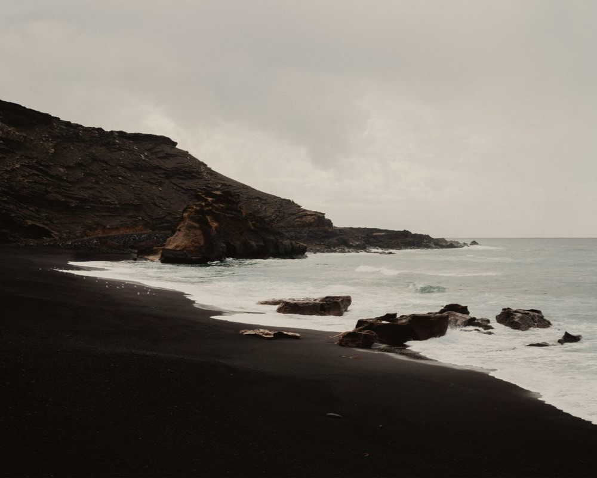
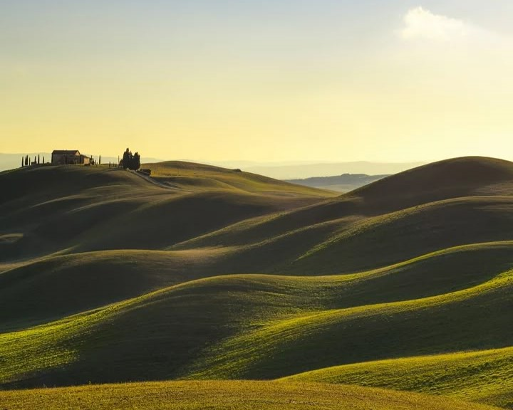
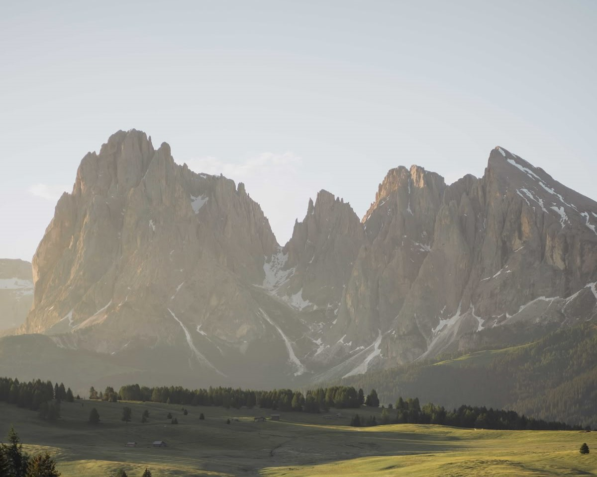
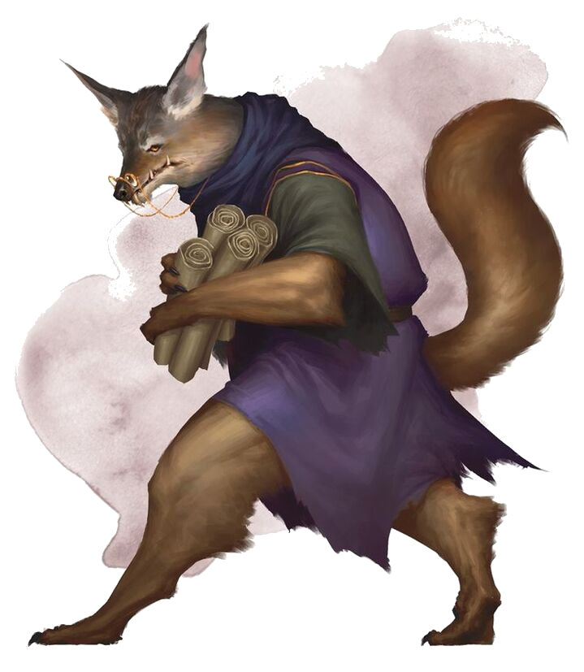
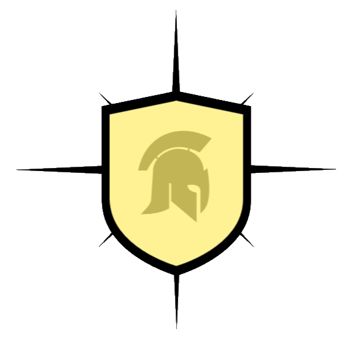
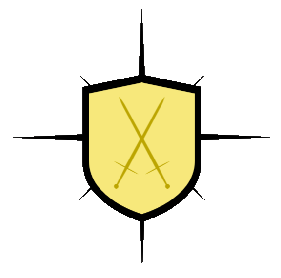
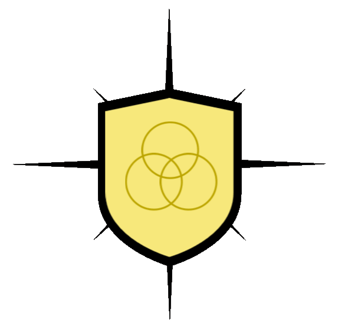
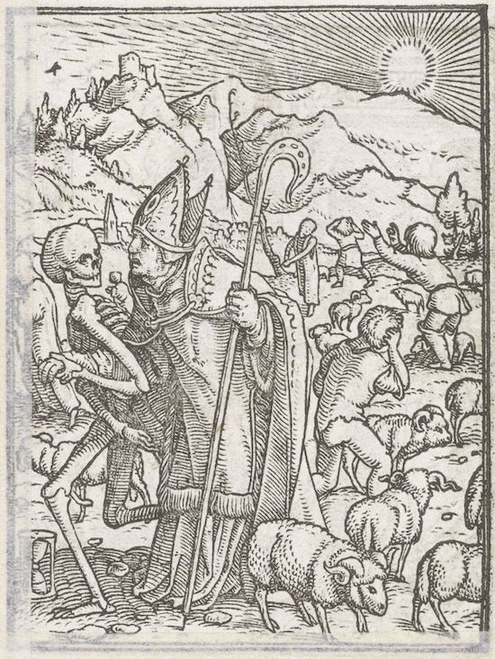

ASHARIA
Asharia is the remaining outpost of the elves of Astren. After the Great War, Astran elves retreated to the south-eastern coast and established a fortress-like nation.
Asharia is home to many port cities and is the home of most arcane research and development on the continent. Citizens of Asharia are tend to be well-off nobility or merchants, or intelligent wizards and arcanists. This nation is also home to the of the Order of Belenus, a righteous order established after the reigning elves brokered a treaty with the humans.
Geography
Aurilon Woods
The Aurilon Woods are a large deciduous forest spanning almsot 140,000 square kilometres across southern Asharia and the regions surrounding both sides of the Drakensberg Mountains.
The proximate location to a number of large Asharian settlements has led to the exodus of the majority of the Woods' dangerous fauna to other, more suitable environments such as the Drakensbergs or the Whispering Wood. As a result, the Aurilon Woods are home to almost-exclusively non- threatening creatures, making them relatively safe for traveling and exploration.
Sands of Cerlyn
|
 One of the Sands' black sand beaches |
|---|
The Sands of Cerlyn is composed of a number of rocky, black sand beaches spanning the 520 kilometres of Asharia's southernmost coastline. It borders the Gulf of Io as well as the Astran Ocean, and the Rivers of Io separate the sands from the Aurilon Woods to the north.
The Sands' dramatic dark colour has given them a sort of mystical significance in the eyes of the Asharian people, and many young arcanists visit these beaches to pay homage as part of their education. This ritual is particularly popular among arcanists studying at the Nar-Alata Arcanaeum in Caelora, due to its proximity to the Sands.
Arnian Fields
|
 Arnian Fields |
|---|
The Arnian Fields are a massive rolling plains spanning the 118,000 square kilometres of central and northern Asharia. It is a more sparsely populated region, as it is home to many nomadic peoples and communities centered on riding rather than settlement.
The Arnian Fields were the primary location of conflict during the Asharian Civil War. Many Asharian soldiers chose to stay and resettle in Fields, adding to the existing population of skilled cavalrymen in the region, and growing the previously quite small settlements to a moderately large population.
Delilta Coast
The Delilta Coast is made up of the handful of beaches which span the 280 kilometres of coastline of the Bay of Galad. The Coast's location neighbouring the Arnian Fields and the temperate waters of the bay make it a popular location for visitors and a frequent stopping point for travelers.
Drakensberg Mountains
|
 View of the Drakensbergs from Asharia |
|---|
The Drakensberg Mountains, the Drakensbergs or the Drakensberg Mountain Range, is the highest and longest mountain range in Astren. It spans 650 kilometres across Arkmore, with a maximum elevation of 4,500 metres.
Although this mountain range is entirely contained within Arkmore, the range ends at the Asharia-Arkmore border. Flora and fauna found in the mountains will frequently travel beyond the Arkmorian border into Asharia.
The Drakensbergs were named after the higher than average draconic population in the mountains. After the First Defeat of Nahldur, and the work of both Asharian officials and the Takal'Dagnir, these dragons were hunted to extinction. Massive draconic skeletons could be found scattered across the mountain range, which served as the only symbol of the mountains' namesake for centuries. However, after Nahldur's return and his subsequent Second Defeat, the draconic population of Astren was revived. A number of dragons have returned to make their home in the Drakensbergs, and now an impressive variety of both chromatic and metallic dragons can be seen flying above the mountains.
Notable Features

Nar-Sinta Arcanaeum interior |
|---|
|
 Arcanaloth |
Arcanaeums
All Arcanaeums are maintained and attended by foxlike creatures known as arcanaloths, and host a multitude of arcane researchers from around Asharia. Each Arcanaeum is also responsible for training monks to serve as guardians to the arcanists' various explorations, and occasionally to assist the Kal and the Kal Alari.
Nar-Alata Arcanaeum
Located in Caelora, the Nar-Alata Arcanaeum hosts the majority of Asharia's knowledge on the good and radiant things in the world. They contain almost uniquely lore on monsters, characters and locations of good or celestial extra-planar origin. They are the foremost study into celestial and fey creatures as well as exploration of the Feywild and research into the upper planes.
Nar-Sinta Arcanaeum
Located in Ays Lenora, the Nar-Sinta Arcanaeum hosts the majority of Asharia's knowledge on the arcane and the origins and nature of magic. They contain lore that is almost uniquely neutral, not associated with any alignment, and centered on the nature of magic. They are the foremost study into the gods and the origins of magic, exploration of the elemental planes and research on the Elemental Chaos the planes of law and chaos.
Nar-Thil Arcanaeum
Located in Ksalion, the Nar-Thil Arcanaeum hosts the majority of Asharia's knowledge on the evil and dark things in the world. They contain almost uniquely lore on monsters, characters and locations of evil extra-planar origin. They are the foremost study into creatures of the abyss and the exploration of the Shadowfell and research of the lower planes.
Thieves' Guild
Order of Belenus
The Order of Belenus strives to protect the land from the unholy and the undead. Members of this order are asked to practice generosity and compassion in their everyday lives, but there are few hard-fast rules that the members are required to follow. Deeds and acts that are considered 'evil,' harming others without reason and stealing are considered sins. It is an organization of great repute, and this good reputation follows its members throughout their travels and tends to imbue order and stability within the organizations that allow them.
The Order of Belenus is led by their Captain, appointed by member vote, whenever it is called. A vote can be called when a Captain dies, chooses to retire, or when members are dissatisfied with the current leadership. A majority of members must agree to a vote for one to be called, and a new leader is elected by popular vote from a group of nominated candidates. Any member may nominate themselves for the role, though they can also be nominated by their peers. The Captain is distinguished from their peers by the mark of the dux. Which can be found on their cloak and blades.
Governance
Asharian Council
Asharia is governed by the Asharian Council, which is led by the Kal, and made up of five Councillors, the Tura En'Templa, Tura En'Ar, Tura En'Ohta, Tura En'Sanye, Tura En'Ettelen, responsible for Asharia's arcane research, judicial system, military, economy and diplomatic and foreign affairs, respectively. Each council member is given a magical sword specifically crafted for their council position, and denotes their specific role on the council. With the exception of the the Tura En'Ohta, for whom military prowess is necessary, these swords are ceremonial, and not intended to be used in combat.
Councillors typically remain in their positions for a great number of years, due to the long lifespan of the elves which make up the Asharian population. Council positions, including that of the Kal, are passed via appointment. A candidate is nominated for the position by the currently serving council member, and is appointed by majority vote of the remaining council members. Traditionally, council members will nominate candidates from their family for the position. In the case that a council member suddenly vacates their position and no successor has been appointed, the position passes to the previous council member's most immediate next-of-kin. All council members must reside in Ays Lenora, irrespective of their family's traditional seat.
|
 Crest of the Kal Alari |
|---|
Kal Alari
The Kal Alari are a nationally regulated security force and serve as
an addition to the country's military as needed. Their primary purpose is to
protect the Kal and other council members. They are primarily martial fighters,
though many do make use of magic to enhance their abilities. The central offices
of the Kal Alari are located in Ays Lenora, and are currently led by General Aurora
Enfiel.
Kal Alari soldiers wear polished silver plate embellished with golden designs and
symbols of the Kal and the council. High ranking members of the Kal Alari –
Commandants, Majors and Captains – can be differentiated by the mithril armour
and rank-specific gold emblems. These more senior Kal Alari ride winged felidar.
Noble Houses
| House Name | Crest | Description |
Themenor |
The Themenor family currently holds the position of the Kal,
responsible for the oversight and management of Asharia on the whole. They have
the deciding vote on all council matters and must be informed of any initiatives
taken by other council members. The Kal also is also the supreme judicial authority
in Asharia, presiding over and adjucating its most significant cases.
|
|
Firahel |
The Firahel family currently holds the position of Tura En'Templa,
responsible for the oversight and management
of arcane research in Asharia. They oversee the Arcanaeums and
all their arcane and extra-planar research. They ensure Asharia
remains at the forefront of arcane and technical innovation on the
continent. The Tura En'Templa wields Istar, the Sword of Sorcery.
|
|
Aleandarre |
The Aleandarre family currently holds the position of Tura En'Ar on the
Council, responsible for the management of the
Asharian economy. They manage the nation's budget and monitor
their expenses. The Tura En'Ar will often work with the Tura
En'Ettelen to monitor their deals and debts with other
nations. The Tura En'Ar wields Alyata, the Sword of Prosperity.
|
|
Arressius |
 |
The Arressius family currently holds the position of Tura En'Ohta on
the Council, responsible for Asharia's military.
They oversee the management and training of
Asharian military forces. When Asharia is at war, the Tura En'Ohta
acts as the general of the Asharian military and the master strategist.
Otherwise, they are simply an advisor and focus on training
the Kal Alari and the military. The Tura En'Ohta wields
Lakilea, the Sword Victory.
|
Caerdonal |
The Caerdonal family currently holds the position of Tura En'Sanye,
responsible for the management, development and
oversight of the judicial and legal system in Asharia. They oversee the
appointment of Judges, develop and pass new laws and sit in on trials of
significant national importance. The Tura
En'Sanye wields Naia, the Sword of Order.
|
|
Lahlenna |
 |
The Lahlenna family currently holds the position of
Tura En'Ettelen, responsible
for foreign affairs and
diplomatic relations. They manage the Asharian ambassadors to the
other nations and consult with the other council members as an advisor.
The Tura En'Ettelen will, when Asharia is at war, work as
a strategist with the Tura En'Ohta.
The Tura En'Ettelen wields Ebrath, the
Sword of Understanding.
|
Character Creation

Asharian characters' most notable feature is their relationship to arcane magic. As arcane research and magical aptitude is the primary focus of the Asharian people, it is likely that characters from this region will have some connection to this kind of magic. Wizards, sorcerers and warlocks (all arcane casters), as well as bards and artificiers can be commonly found as students, researchers, teachers or in some suitable position at one of Asharia's three Arcanaeums (centres of magical research). These casters are not bound to these institutions however, and could be found in a variety of Asharian contexts, as shopkeepers, travelers or simply adventurers. Non-arcane casters such as druids and clerics, though less common, can also be found throughout Asharia, though likely with some restrictions on their subclasses, particularly cleric domains and deities.
Martial classes are also popular in Asharia. In addition to arcanists, Arcanaeums both
train and employ a variety of monks, though which Arcanaeum the monk is trained in will
affect their subclass, and vice versa. Fighters can be seen in a number of different
contexts, as a member of the Kal Alari, a soldier from the Civil War, a member of one of
the Arnian Fields' many nomadic tribes or a traveler or adventurer. Similarly to a monk,
the character's origin will influence their subclass, and vice versa. Paladins can also be
found as members of the Order of Belenus.
The Thieves' Guild's
strong presence in Asharia means that rogues are commonly found across the nation as well.
For more clarification on
appropriate or suitable subclass choices, see the table below.
Characters from Asharia will almost exclusively be of elven descent. Though it is possible
to have humans or other races migrate from other regions, they are few and far between.
The specific nature of the character's elven heritage will influence where they were born or grew
up, and vice versa. For more details on this, see the table below.
Classes
| ORIGIN | CLASSES |
|---|---|
| NAR-ALATA ARCANAEUM |
|
| NAR-SINTA ARCANAEUM |
|
| NAR-THIL ARCANAEUM |
|
| KAL ALARI |
|
| ARNIAN NOMADIC TRIBES |
|
| Order of Belenus |
|
| ASHARIAN SOLDIERS |
|
| THIEVES' GUILD |
|
Races
| RACES | ORIGINS |
|---|---|
| HIGH ELF | High Elf is one of the most common elf variants in Asharia, and can be found across the region. |
| WOOD ELF | Wood Elf is one of the most common elf variants in Asharia, and can be found across the region, though they are more prominent in the Aurilon Woods regions. |
| DROW ELF | Drow Elf is a more uncommon elf variant in Asharia. They are typically found in the regions bordering Oth, or in cities, where there is infrastructure to accomodate their sunlight sensitivity. |
| HALF-ELF | Half-elves, though less common than High or Wood Elves, are still quite common and can be found throughout Asharia, though they are more prominent in large cities. |
| ELADRIN | Eladrin are the rarest of all elven variants in Asharia, due to their extra-planar origins. These elves are generally found only in the Aurilon Woods or in Caelora, where there are stronger connections to the Feywild. |
Map